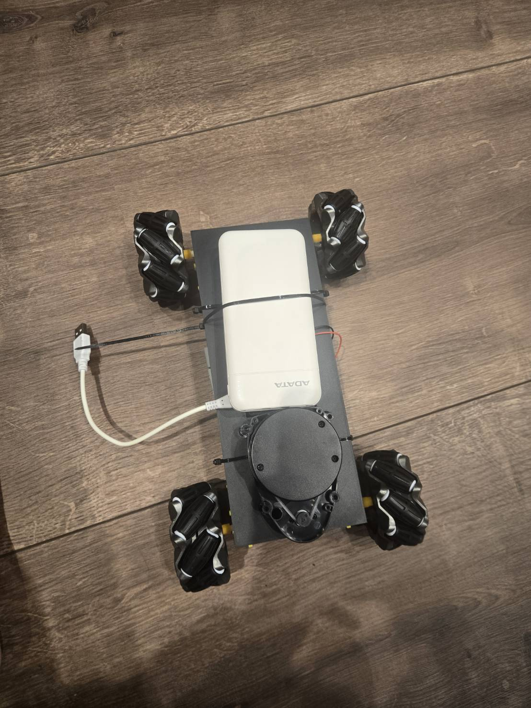
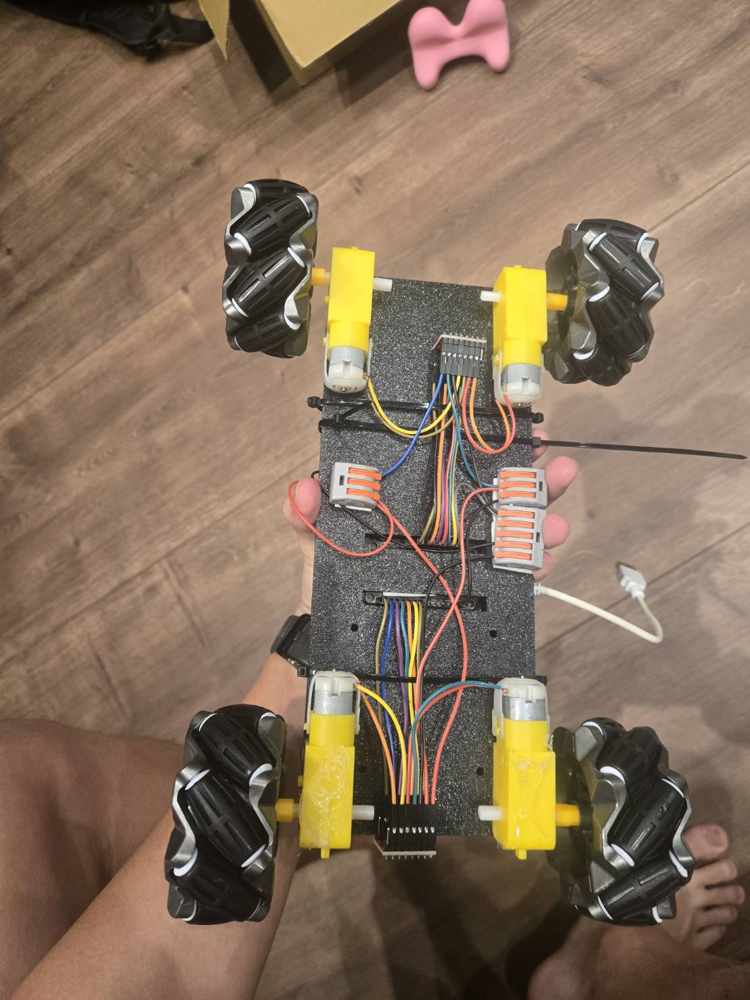
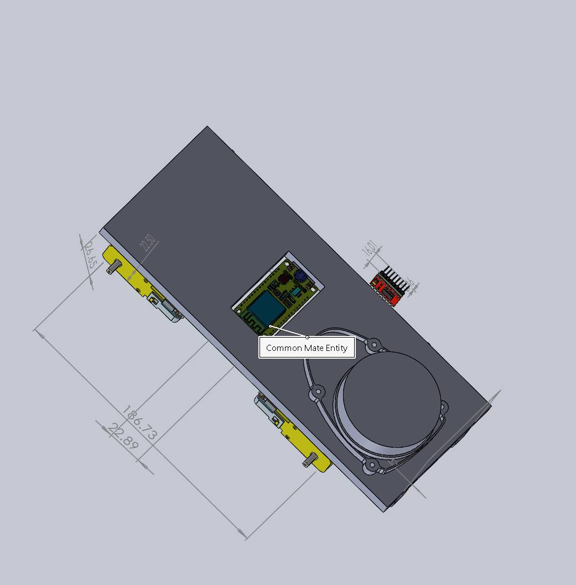
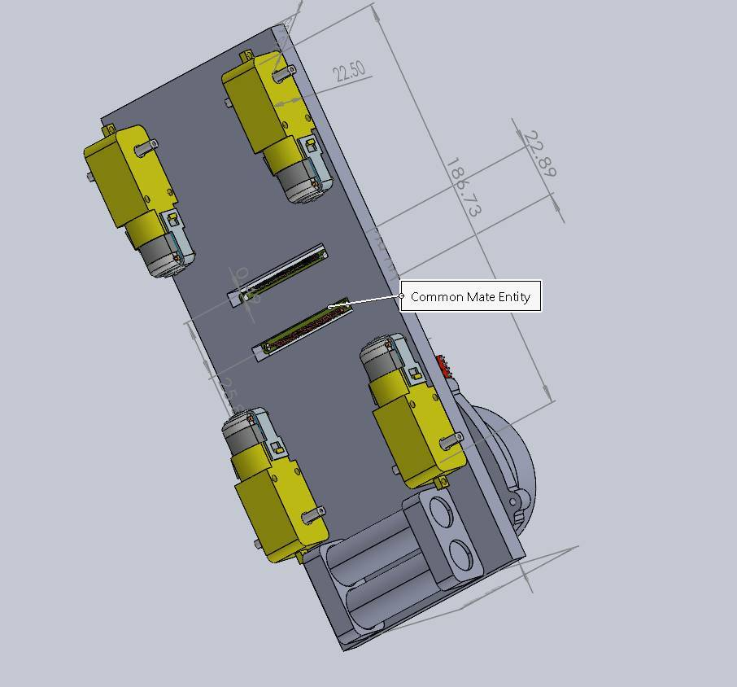

Built or implemented
- Four-wheel mecanum chassis and motor control
- ESP32 movement interface for forward, strafe, and rotation
- Bluetooth keyboard controller with a command timeout
I’m building an omnidirectional robot that can track a moving target, keep a comfortable distance, and eventually steer around obstacles. The current platform focuses on the drivetrain and wireless manual control; autonomous following is a later milestone.

The four mecanum wheels are driven independently by TT gear motors and two TB6612FNG motor drivers. Their angled rollers let the chassis move forward, backward, sideways, or diagonally, as well as rotate. The ESP32 translates forward, strafe, and rotation requests into four motor commands.

These CAD views show the mecanum chassis, motor placement, and the planned position of the rotating LiDAR unit. They document the mechanical layout; the drawings alone do not establish that the LiDAR is wired or operational.


This screen recording shows the LiDAR scan visualization used while bringing up the sensor. It is an early sensing step; identifying and following a moving target is still under development.
A Python keyboard controller sends movement commands to the ESP32 over Bluetooth Classic. The controls combine directions for strafing and diagonal movement; a timeout stops the motors if commands stop arriving.
Provided robot test clip · Manual movement stage
The planned YDLIDAR X3 will provide a rotating 2D scan. The intended control loop will estimate the target’s distance and direction, compare those readings with a desired following position, and send corrections through the same mecanum movement interface.